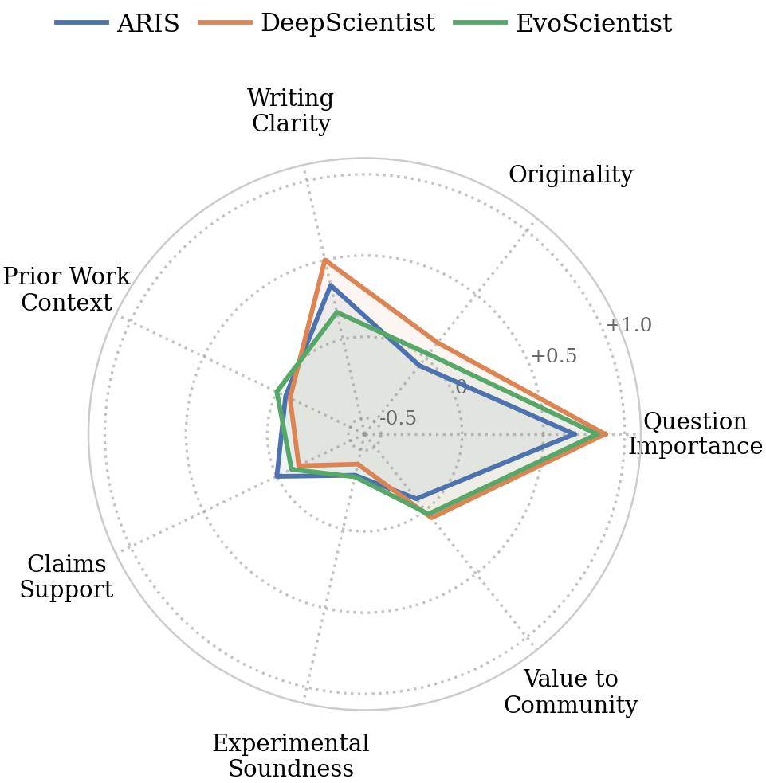

Of the 238 runs, 88 (37%) are complete. 86 of them come from three tools.
Completion rate
Completeness by artifact
Mean over 34 tasks. Each artifact is graded from 0 to 1; the required-artifact score is the fraction of the four artifacts produced.
| Tool | Compl. rate | Idea | Code | Results | Paper | Required artifacts |
|---|---|---|---|---|---|---|
| EvoScientist | 85% | 0.88 | 0.97 | 0.88 | 0.88 | 0.90 |
| DeepScientist | 85% | 0.91 | 1.00 | 0.94 | 1.00 | 0.96 |
| ARIS | 82% | 1.00 | 0.97 | 0.85 | 0.94 | 0.94 |
| Tiny-Scientist | 3% | 0.41 | 0.35 | 0.21 | 0.12 | 0.27 |
| AI-Researcher | 3% | 0.03 | 1.00 | 0.24 | 0.21 | 0.37 |
| AI Scientist-v2 | 0% | 1.00 | 1.00 | 0.91 | 0.25 | 0.79 |
| AutoResearchClaw | 0% | 0.97 | 0.53 | 0.00 | 0.00 | 0.38 |
AI Scientist-v2 is the one case where the metrics separate: it produces an idea, code and results in almost every run but fails at writing the paper, so it never completes.
Why runs fail
| Tool | Dominant failure | Detail |
|---|---|---|
| AI Scientist-v2 | No PDF: the writing stage fails | Completes 0 of 34 runs. The paper is either missing or exists only as JSON (17 runs each), and the pipeline reports failure in about 31 runs. Logs mostly show rate limits and failed experiments, and idea-to-code consistency is very low (mean about 1.8). |
| AI-Researcher | Pipeline stops early, no idea file | Completes 1 of 34 runs. 33 runs have no idea file, and most of them also lack results and a paper. Logs are dominated by crashes, API quota errors and logger truncation errors. |
| ARIS | Weakened protocol | Completes 28 of 34 runs. About half of its papers score below 5 in review, and the experiment scale is often cut substantially. |
| DeepScientist | Result-integrity risks | Completes 29 of 34 runs, with a PDF in every run. The evaluation often finds a reduced protocol, about 6 runs flagged for concealing unfavorable results, and hard-coded pilot values or reported metrics that do not match the code. |
| EvoScientist | Occasional missing artifacts and concealed results | Completes 29 of 34 runs. The incomplete runs mostly lack the idea, results or paper. About 7 runs are flagged for concealing unfavorable results, and the citation fabrication rate is high in some runs. |
| AutoResearchClaw | Stopped by its own quality gate in the experiment stage | Completes 0 of 34 runs; every run lacks results and a paper. About 22 logs point to the quality gate. Most runs stop in the experiment stage and never reach writing. |
| Tiny-Scientist | Broken TeX and repair chain, silent change of topic | Completes 1 of 34 runs; about 20 runs produce none of the four artifacts. The writing stage commonly fails on a missing inconsolata.sty and a failed import of tiny_scientist.llm. When code exists, idea-to-code consistency is 1, and the topic drifts in about 6 to 9 runs. |
Automated peer review
104 generated papers were reviewed. The mean overall score is 4.83 out of 10 and the highest single paper reaches 6.70. AI Scientist-v2 and AutoResearchClaw produced no reviewable paper.
| Metric | Alln=104 | ARISn=32 | DeepScientistn=34 | EvoScientistn=30 | Tiny-Scientistn=1 | AI-Researchern=7 |
|---|---|---|---|---|---|---|
| Overall score (1 to 10) | 4.83max 6.70 | 4.71max 6.50 | 5.01max 6.70 | 4.87max 6.50 | 5.60max 5.60 | 4.19max 5.80 |
| Question Importance | +0.81 | +0.69 | +0.88 | +0.83 | +1.00 | +0.86 |
| Originality | +0.00 | −0.06 | +0.12 | +0.03 | +1.00 | −0.57 |
| Writing Clarity | +0.31 | +0.34 | +0.50 | +0.17 | +0.00 | −0.14 |
| Prior Work Context | −0.06 | −0.06 | −0.09 | +0.00 | +0.00 | −0.14 |
| Claims Support | −0.10 | +0.00 | −0.15 | −0.10 | +0.00 | −0.29 |
| Experimental Soundness | −0.38 | −0.34 | −0.41 | −0.33 | +0.00 | −0.57 |
| Value to Community | −0.02 | −0.09 | +0.06 | +0.03 | +0.00 | −0.29 |
Sub-dimensions are rated −1, 0 or +1 per paper; the table shows the mean. AI Scientist-v2 and AutoResearchClaw have no reviewable paper and are omitted. Tiny-Scientist has a single paper.
Number of papers at each rating, over all 104 reviewed papers:
| Sub-dimension | −1 | 0 | +1 |
|---|---|---|---|
| Question Importance | 0 | 20 | 84 |
| Originality | 11 | 82 | 11 |
| Writing Clarity | 6 | 60 | 38 |
| Prior Work Context | 9 | 92 | 3 |
| Claims Support | 25 | 64 | 15 |
| Experimental Soundness | 39 | 65 | 0 |
| Value to Community | 12 | 82 | 10 |

Conclusion alignment with the original papers
Alignment could be evaluated for 135 runs. Mean alignment is 0.39 and mean coverage is 0.58, so even the leading tools recover only about half of the original conclusions. When a task needs large datasets or long runtimes, tools switch to their own datasets, metrics and comparison targets.
Mean conclusion-alignment score per tool (0 to 1), with the number of evaluable runs. AutoResearchClaw produced no results and is absent.
Only 21 evaluations allow a numeric comparison, giving 52 metric pairs: 36 agree with the original, 4 are worse, 4 are better, and 8 turn out not to be comparable. None of the 4 better pairs is a real gain.